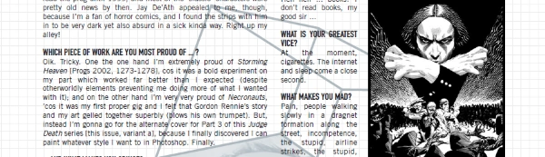

A slightly more sophisticated version of a Droid Profile, these ran just before the long-running Interrogation series of more in-depth articles.
Art by Frazer Irving
| Story Title | Parts | Pages | w indicates a wraparound coverCovers | Year(s) | Issues | Writer | Artist | Colourist | Letterer |
|---|---|---|---|---|---|---|---|---|---|
| Suspect #1: Simon Fraser | 1 | 1 | 0 | 2002 | M201 | editorial | photo | <-- | n/a |
| Suspect #2: Gordon Rennie | 1 | 1 | 0 | 2003 | M202 | editorial | photo | <-- | n/a |
| Suspect #3: Pat Mills | 1 | 2 | 0 | 2003 | M203 | editorial | photo & promos | <-- | n/a |
| Suspect #4: John Smith | 1 | 1 | 0 | 2003 | M204 | editorial | photo & promos | <-- | n/a |
| Suspect #5: John Ridgway | 1 | 1 | 0 | 2003 | M205 | editorial | photo | <-- | n/a |
| Suspect #6: Mark Harrison | 1 | 1 | 0 | 2003 | M207 | editorial | photo | <-- | n/a |
| Suspect #7: Patrick Goddard | 1 | 1 | 0 | 2003 | M210 | editorial | photo | <-- | n/a |
| Suspect #8: Frazer Irving | 1 | 1 | 0 | 2003 | M211 | editorial | photos & promos | <-- | n/a |
| Suspect #9: D'Israeli | 1 | 1 | 0 | 2003 | M212 | editorial | photo | <-- | n/a |
| Suspect #10: Henry Flint | 1 | 1 | 0 | 2003 | M214 | editorial | photo & promos | <-- | n/a |
| Suspect #11: Simon Coleby | 1 | 1 | 0 | 2004 | M215 | editorial | photo | <-- | n/a |
| Suspect #12: Simon Davis | 1 | 1 | 0 | 2004 | M218 | editorial | photo & promos | <-- | n/a |
| Suspect #13: Steve Roberts | 1 | 1 | 0 | 2004 | M219 | editorial | photo & promos | <-- | n/a |
| Suspect #14: Chris Weston | 1 | 1 | 0 | 2004 | M221 | editorial | photo & promos | <-- | n/a |
| Suspect #15: Simon Spurrier | 1 | 1 | 0 | 2004 | M222 | editorial | photo & promos | <-- | n/a |
| year | episodes | pages |
| 1993 | 0 | 0 |
| 1994 | 0 | 0 |
| 1995 | 0 | 0 |
| 1996 | 0 | 0 |
| 1997 | 0 | 0 |
| 1998 | 0 | 0 |
| 1999 | 0 | 0 |
| 2000 | 0 | 0 |
| 2001 | 0 | 0 |
| 2002 | 1 | 1 |
| 2003 | 9 | 10 |
| 2004 | 5 | 5 |
| 2005 | 0 | 0 |
| 2006 | 0 | 0 |
| 2007 | 0 | 0 |
| 2008 | 0 | 0 |
| 2009 | 0 | 0 |
| 2010 | 0 | 0 |
| 2011 | 0 | 0 |
| 2012 | 0 | 0 |
| 2013 | 0 | 0 |